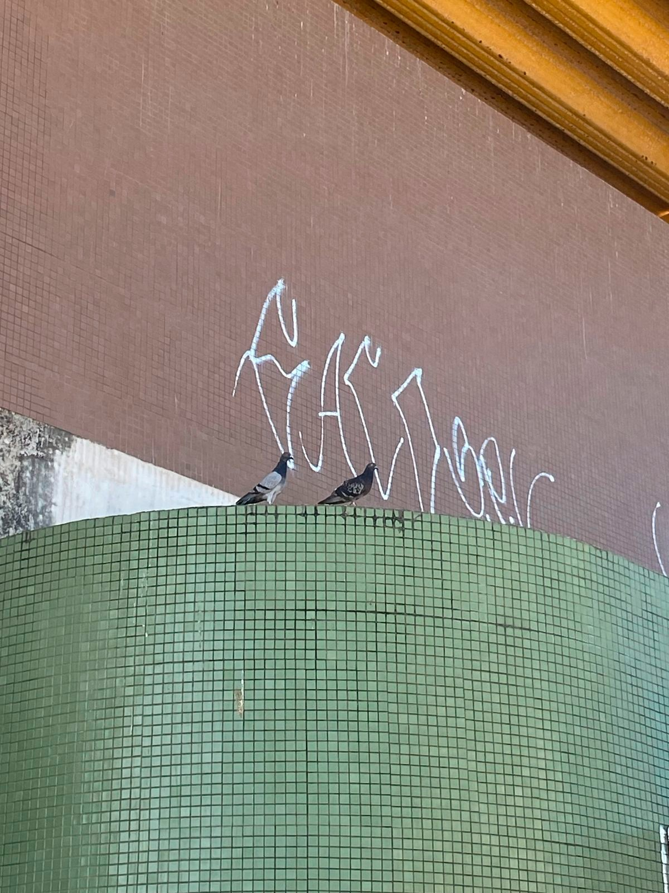
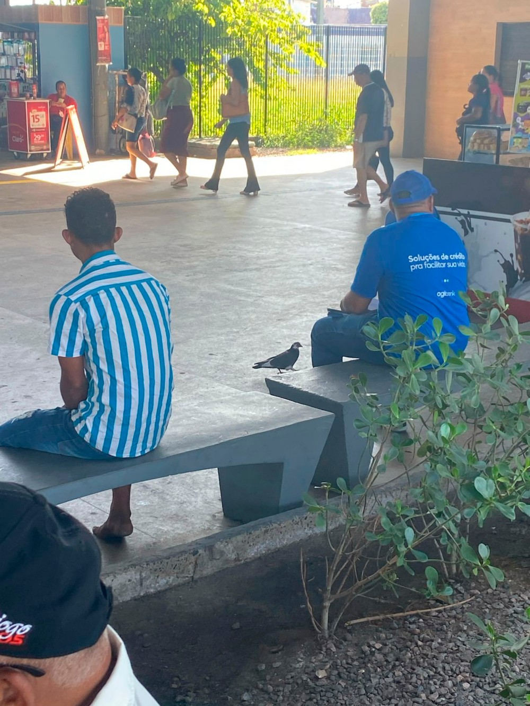
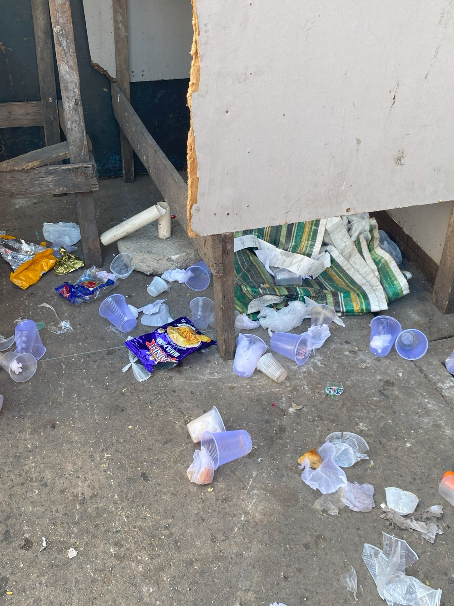
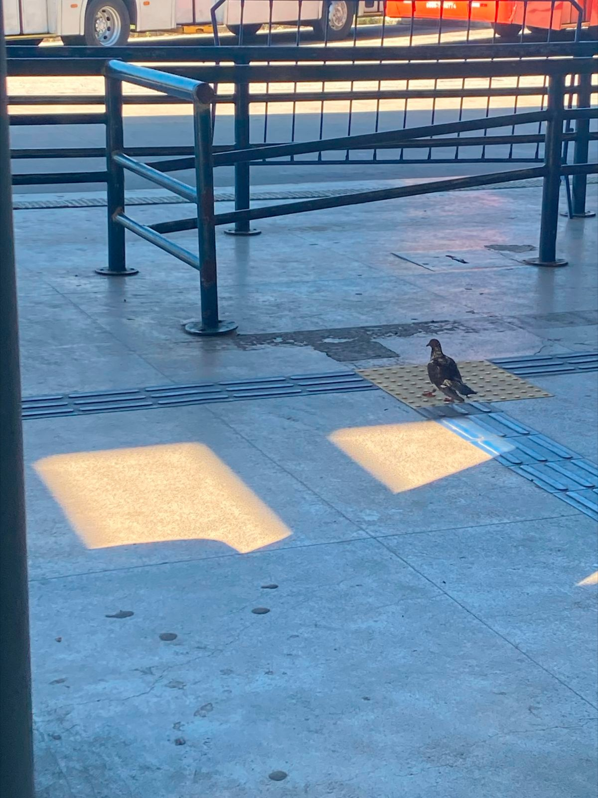

Por que eles continuam no meio urbano?
Sua permanência no meio urbano é justificada por diversos fatores, sendo um deles a disponibilidade de alimento como migalhas de pão, pipoca, grãos em geral, entre outros.
Atualmente existe uma infestação de pombos em muitos locais públicos, as estações de metrô sendo um grande exemplo deste fato. Eles se alojam em locais como estes por contarem com uma arquitetura que facilita seu abrigo e a criação de ninhos, bem como pela alimentação que a população fornece direta ou indiretamente através do descarte incorreto de restos de alimentos e demais resíduos.

Qual é o principal problema do convívio entre pombos e humanos?
Pombos são uma espécie que se alimenta de grãos, frutos e insetos, porém com a quantidade de alimento disponível devido aos resíduos alimentares do ser humano, eles se adaptaram ao ambiente urbano de forma a se tornarem dependentes deste ambiente, atrapalhando assim sua função ecológica e seus hábitos naturais (controle de insetos e disseminação das sementes dos frutos que comem). Ao serem alimentadas, as aves deixam de buscar na natureza os alimentos adequados à sua dieta.
Outro problema é que as fezes do pombo podem conter fungos e outros microorganismos, que em condições favoráveis, tornam-se vetor de doenças que afetam a saúde humana. A acidez das fezes também é capaz de corroer estruturas e monumentos, causando prejuízos financeiros.
Um exemplo de grupo afetado por este problema é a comunidade do Coque, que fica ao lado da estação de metrô Joana Bezerra, onde estes animais acabam transitando para a casa das pessoas, trazendo risco de contaminação de caixas de água e demais reservatórios.

Como podemos ajudar no controle da superpopulação de pombos no metrô?
Sem a presença de predadores naturais e com a fartura de alimentos e água disponíveis e bons locais para reprodução, a proliferação destes animais só aumenta. As principais estratégias para reduzir a taxa de reprodução destas aves e evitar a superpopulação consistem em:
- instalação de telas e barreiras físicas em locais que possam servir de
abrigo para eles, como vãos de telhados e caixas de ar-condicionado; - descarte adequado de resíduos;
- diminuição da disponibilidade de alimentos.
Clique aqui para mais detalhes sobre métodos de controle populacional
| Método | Descrição | Prós | Contras |
|---|---|---|---|
| Barreira Física | São redes, telas, materiais gelatinosos, cercas e pontas metálicas colocados de modo a impedir o pouso ou a entrada a locais onde há abrigo, água ou alimento (FEARE, 1984). | Soluções mais duradouras e de fácil aplicação (FEARE, 1984). | Alto custo financeiro para instalação e manutenção. Os materiais gelatinosos podem aderir as penas e as pontas afiadas podem ferir as aves (FEARE, 1984). |
| Espanto Visual | Utilização de espantalhos, balões e pipas (INGLIS, 1980 apud FEARE, 1986). | Dispersa os animais para outra localidade. | São de rápida adaptação, impróprios em áreas urbanas devido ao vandalismo (FEARE, 1986). |
| Esterilização | Produtos químicos que previnem ou inibem a reprodução (FEARE, 1986; 1990). Um exemplo é o Orthinol (FITZWATER, 1989). | Redução definitiva da população; pode ser utilizado para um ou para ambos os sexos (FEARE, 1986; 1990). | São altamente tóxicos, é necessária mais de uma aplicação; pode afetar outras espécies ou pombos em fase não reprodutiva (FEARE, 1986; 1990). |
| Construção de Pombais Controlados | Construção de pombais bem cuidados para acomodação de uma pequena população de pombos. | Mantém a população de pombo controlada e saudável, e permite manter o hábito de alimentar os animais (SULLIVAN, 1993). | Isoladamente não controla as populações, é preciso conjugar com outros métodos. |
| Remoção dos pombos | Remoção das aves para outros locais, principalmente os reprodutores, a partir de técnicas de atração por meio de iscas. | Baixo custo; reduz populações locais em curto prazo. | Transfere o problema para outros locais; a redução dos reprodutores antecipa o estado reprodutivo nos jovens (COULSON et al, 1982 apud FEARE, 1984). |
| Educação Ambiental | Campanhats educativas visando a conscientização da população sobre os problemas causados pelos pombos urbanos, a redução da oferta de alimentos e dos locais de abrigo. | Redução efetiva e duradoura da população de pombos no local; não há impacto ambiental. | Não é alcançável em curto prazo; dificuldade de atingir a todas as pessoas, pois há resistências quanto a mudanças de comportamento de alimentar os pombos. |
| Mudança ambiental | Redução das atrações em ambientes urbanos, isto é, da oferta de comida (proteção do estoque, higiene, cobertura dos lixões ou incineração do lixo) e de locais apropriados para poleiros e construção de ninhos. | Redução da população local; custo razoável quando projetados para tal. | Prédios de grande significância arquitetônica inviabilizam a modificação. O hábito da oferta de alimento quando o pombo é atração turística. Alto custo. |
LABANHARE, L.L.; PERRELLI, M.A.S. Pombos urbanos: Biologia, Ecologia e métodos de controle populacional
Quais os métodos eficazes para evitar a disseminação destas doenças?
As fezes secas dos pombos facilitam a disseminação de alguns fungos que, caso inalados, podem acarretar em micoses profundas e possivelmente fatais. Normalmente, quando alguém se aproxima de uma população de pombos, eles se dispersam e levantam vôo, espalhando no ar poeira que contém partículas de fezes e esporos dos fungos, que podem ser inalados. Um dos métodos adequados para evitar a contaminação é a higienização correta dessas fezes, com produtos específicos para isso, e impedir o ressecamento para evitar que as partículas delas se dispersem no ar e contaminem nossos alimentos e o ar que respiramos.

Clique aqui e confira uma tabela com as principais doenças e como
prevení-las
| Doença | Agente | Sintomas | Transmissão |
|---|---|---|---|
| Criptococose | Fungo Cryptococus Neoformans | Geralmente se apresenta como meningite sub-aguda ou crônica | Ao inalar poeira gerada pelas fezes secas de pombos e canários |
| Histoplasmose | Fungo Histoplasma capsulatum | Pode apresentar doença pulmonar ou não dar sintomas | Ao inalar esporos do fungo encontrado em acúmulo de fezes secas de pombos ou morcegos |
| Clamidiose | Bactéria Chlamydia psittaci | Pode não apresentar sintomas ou causar doença pulmonar, vómito e diarréia | Ao inalar poeira gerada pelas fezes ou secreções de aves doentes |
| Salmonelose | Bactéria Salmonella spp. | Toxinfecção alimentar com sintomas como vómitos, diarréia, febre e dores abdominais | Ingestão de carne e ovos contaminados com fezes animais ou humanas ou alimentos mal lavados |
| Dermatites | ÁcaroOrnithonyssus spp. | Pontos avermelhados e coceira na pele, semelhante às picadas de insetos | Através do contato da pele com o ácaro (piolho de pombo) |
| Alergias | Presença de ninhos e fezes de pombos no ambiente. | Podem ocorrer rinites e crises de bronquite em pessoas sensíveis | Ao inalar o ar de ambientes com fezes e ninhos de pombos |
Série Educativa da Fauna Sinantrópica elaborado pela equipe COVISA – Prefeitura de São Paulo.
Quais os principais sintomas dessas doenças e o que devo fazer ao identificá-los?
A Criptococose é uma das mais conhecidas, e geralmente se apresenta como uma meningite subaguda ou crônica. Já a Histoplasmose e a Clamidiose podem não apresentar sintomas ou causar doença pulmonar. A Salmonelose se manifesta como uma infecção alimentar que pode apresentar como sintomas vômitos, diarreia, febre e dores abdominais. Já as dermatites podem se apresentar como pontos avermelhados e coceira na pele, semelhantes a picadas de insetos. Ao apresentar alguns desses sintomas é importante procurar um profissional de saúde, pois algumas dessas doenças citadas caso, somadas a outros problemas de saúde, podem ser fatais.

Apesar dos pombos serem considerados uma praga, há leis que os protegem e não seguí-las é crime.
É possível denunciar quem alimenta pombos, caso haja necessidade de medidas preventivas. A Instrução Normativa IBAMA nº 141/2006 permite o controle dessas aves, desde que não cause maus-tratos ou eliminação do animal. Apesar de serem considerados uma praga a Lei 9.605/98 e o Decreto 6.514/08 protegem a espécie, pois são considerados fauna silvestre. Matar, ferir ou maltratar pombos é crime ambiental, com pena de multa ou reclusão.